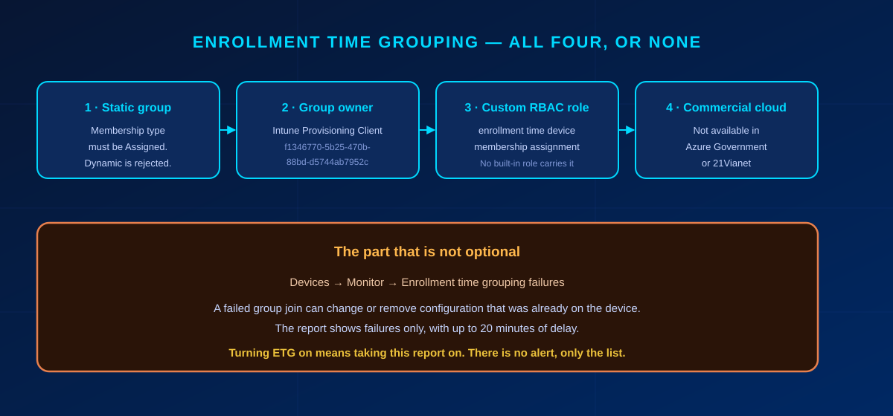

Apple automated device enrollment in Intune now has two configuration surfaces, and Microsoft has already picked which one gets the new features. If you open the Learn page for iOS/iPadOS, macOS, tvOS or visionOS ADE setup, the same box sits near the top of all four: the older experience under Enrollment program tokens → Profiles "will eventually be retired" and "won't receive new features." No date accompanies that sentence, and no migration tool ships with it.
Switching surfaces is the cheap half. Apple ADE configuration applies during Setup Assistant and never again, so the devices already in your users' hands will not pick up a new enrollment policy no matter what you assign to them. That turns the migration from an afternoon of clicking into a question about your hardware replacement cycle.
In short
Build every new Apple ADE configuration as an Enrollment Policy. The old Profiles surface is on its way out and new capability lands only on the new one — tvOS, visionOS and Enrollment Time Grouping have no equivalent under Profiles. Set a default policy per token early, because a synced device with no policy assigned fails enrollment when someone powers it on. Do not plan a migration project. Devices still in the box migrate for the price of one assignment; devices already enrolled only take the new configuration after a factory reset, so let them move with the replacement cycle. And if you turn on Enrollment Time Grouping, you have also signed up for watching its failure report — a failed group join can strip configuration off a device that already had it.
What actually changed
Microsoft added a second place to configure Apple ADE. Both are reached through the same enrollment token, and in the portal they look like neighbouring blades:
- Enrollment program tokens → Profiles — the original surface, in production in most tenants that have had Apple devices for more than a year.
- Enrollment program tokens → Enrollment policies — the newer surface, and where Microsoft is now shipping.
"This article reflects the updated policy creation experience (Enrollment program tokens > Enrollment policies) for devices going through automated device enrollment. The older experience (Enrollment program tokens > Profiles) differs and will eventually be retired. The older experience won't receive new features, so be sure to create new policies under Enrollment policies."
That box is identical on the iOS/iPadOS, macOS, tvOS and visionOS setup pages, which is about as clear a signal as Microsoft gives without publishing a deprecation timeline. What it does not give you is a date. Anyone telling a customer when Profiles switch off is making the date up.
The stronger evidence is what the two surfaces can do. Microsoft documents three capabilities exclusively under Enrollment policies, with no Profiles equivalent described anywhere:
- tvOS automated device enrollment.
- visionOS automated device enrollment.
- Enrollment Time Grouping, which puts the device into a security group during enrollment instead of afterwards.
Check the licence before you quote the first two at anyone: tvOS and visionOS management requires Microsoft Intune Plan 2, while Plan 1 covers iOS/iPadOS. They are useful as evidence of where Microsoft is shipping, and useless as a feature promise to a customer who does not hold Plan 2.
Whether the architecture underneath was replaced or merely extended is a fair question, and one you cannot answer from the outside. For planning purposes it does not matter. What matters is where new capability arrives, and that is settled.
Why the migration follows your hardware cycle
Moving a device to the new surface is one assignment, which is tedious at twenty devices and brutal at two thousand. That is the easy version of the problem. For devices that are already enrolled and in service, reassignment does not move them at all. The same Learn box that announces the retirement says so:
"If you make changes to an existing enrollment policy, the new settings won't take effect on assigned devices until devices are reset back to factory settings and reactivated. The device name template setting is the only setting you can change that doesn't require a factory reset to take effect. Changes to the naming template take effect at the next check-in."
That is how ADE has always worked: the enrollment configuration is delivered to the device by Setup Assistant during activation, and it is never re-evaluated afterwards. An iPhone that has been in service for two years is running whatever Setup Assistant handed it on day one.
Note the one carve-out in that quote, because it is the only lever you have on the installed base: the device name template applies without a factory reset, at the next check-in. If your naming is inconsistent across an older fleet, that you can fix today. Everything else in the policy waits for a wipe.
A second, independent piece of Learn documentation points the same direction. ADE now issues management-profile certificates over ACME, and on macOS the rollout has exactly the same boundary: "Devices that are already enrolled don't receive an ACME certificate unless they re-enroll into Microsoft Intune." That sentence appears on the macOS overview page, where ACME needs macOS 13.1 or later; the Apple mobile overview lists version requirements (iOS 16.0, iPadOS 16.1, tvOS 26.0, visionOS 26.0) without repeating the re-enrollment caveat, so read it as documented for Macs and likely for the rest. Two different features, one shared constraint — the enrolled fleet is frozen at the configuration it received at setup.
So the fleet splits in two, and the two halves cost wildly different amounts:
| Device state | What migration means | Effort |
|---|---|---|
| Synced from Apple Business or Apple School Manager, never activated — stock, spares, new orders | Assign the new Enrollment Policy. Setup Assistant applies it on first boot. | One assignment |
| Already enrolled and in a user's hands | Assignment changes nothing on the device. The new configuration lands at the next factory reset. | A device lifecycle |
Which leaves one sensible plan: point new and reset devices at Enrollment policies starting now, and let the installed base move as hardware gets replaced, wiped for reassignment, or reset for any of the ordinary reasons devices get reset. Wiping a working fleet to unify the configuration is difficult to justify to anyone paying the bill, and impossible to justify when there is no deadline forcing it.
That plan needs three numbers per customer, and they are worth collecting before anyone asks how long this will take: how many Apple devices sit behind each token, how many of them are running on the old Profiles, and what the replacement cycle actually looks like. Without the third number the first two tell you nothing about duration.
Enrollment Time Grouping: the benefit and the bill
Enrollment Time Grouping is the headline capability that only exists on the new surface, and it solves a real problem. Without it, a freshly enrolled device has to wait for group membership to be evaluated before Intune knows which apps and policies it needs. Microsoft puts a number on the wait: "It can take up to 8 hours post enrollment for devices to receive all apps and policies." With ETG, the device is written into a named security group during enrollment, so the configuration is already on its way when the user reaches the home screen.
Four prerequisites gate it, and missing any one of them means the feature silently does not work.

| Requirement | Detail |
|---|---|
| Static group | Membership type Assigned. Dynamic groups are not offered in the picker. |
| Service principal as owner | Intune Provisioning Client, AppId f1346770-5b25-470b-88bd-d5744ab7952c. Some tenants show it as Intune Autopilot ConfidentialClient; the AppId is what identifies it. Adding it needs ownership of the group, or a role carrying microsoft.directory/groups/owners/update: Groups Administrator or User Administrator. |
| Custom RBAC role | The enrollment time device membership assignment permission, which Learn describes as "available in custom roles under Enrollment programs" — no built-in role is named anywhere. The group must also be in the admin's scope groups or it will not appear during policy creation. |
| Commercial cloud | Not available for Apple ADE policies in Azure Government or Azure operated by 21Vianet. |
The bill for enabling it sits in the same documentation, a paragraph below the benefit:
"Failure to join the group during enrollment might cause configuration to change or be removed from the device after enrollment, so we recommend monitoring the report continuously so that you can take the necessary mitigating actions right away."
Configuration being removed from a device is a different class of problem from a device being slow to provision. The report lives under Devices → Monitor → Enrollment time grouping failures, it lists failures only, it lags by up to 20 minutes, and reading it requires Microsoft.Intune/ManagedDevices/Read. There is no alert attached. Microsoft's own suggestion is to build something that polls the report on a schedule and notifies you, which tells you how much of this is left as an exercise for the reader.
Three more things worth knowing before you commit to ETG:
- The group membership is permanent. Learn is explicit that ETG "creates real Entra security group memberships that persist after enrollment." This is not a staging area that empties itself. Conditional Access, group-based licensing and every other consumer of group membership will read that group, so name it and govern it like any other device group. Learn's own advice is to skip ETG entirely if nothing else reads the group.
- Not supported with the staging token.
- You cannot remove the group through the portal. When editing an existing enrollment policy, the Remove option for the ETG group is missing — a known issue. The documented workarounds are deleting and recreating the policy, or calling
DELETE .../configurationPolicies('{policyId}')/clearEnrollmentTimeDeviceMembershipTarget. Worth knowing before you attach a group you are not sure about.
ETG's static-group requirement does not retire the dynamic group pattern. Learn still documents building a dynamic group from the policy name via the enrollmentProfileName parameter, and for everything that happens after enrollment that remains the right tool. The split is documented rather than merely sensible: "If you assign dynamic groups to enrollment policies, there might be a delay in delivering applications and policies to devices after the enrollment." ETG covers the enrollment window, dynamic groups cover steady state. One related detail from the same page, easy to miss and cheap to fix: for devices enrolling with user affinity, the enrolling user should already be a member of an Entra user group before setup, or delivery slows down for that reason instead.
Bulk assignment: what the portal can and cannot do
Microsoft shipped no migration tool for this, which is not the same thing as shipping no bulk assignment. The distinction is worth getting right before a customer meeting, because the loose version collapses the moment somebody opens the portal.
The portal does multi-select. Learn's own instructions read "Select all devices you want to assign, and then select Assign policy," and there is a separate Apple Serial Numbers pane for assigning by serial. At four-figure device counts this is genuinely unpleasant — that part of the complaint is fair. But the accurate statement is that Microsoft shipped no migration tool, not that there is no bulk assignment.
On the Graph route, one widely repeated detail has no documentation behind it: that the deviceIds field of the beta action updateDeviceProfileAssignment expects serial numbers rather than device IDs. Learn does not say that anywhere. The reference lists deviceIds as a string collection with an empty description, and the request example shows nothing but the placeholder "Device Ids value". The claim is plausible — ADE identity in Intune runs on serial numbers throughout, including the sync itself and the depEnrollmentBaseProfile resource, which is described as being assigned to "Apple DEP serial numbers" — but plausible is not documented, and this is a beta endpoint where guessing gets expensive.
Test it against a single device in a lab tenant before pointing it at a fleet. And treat the whole route as a one-off migration step rather than an operational procedure: Microsoft's position on beta Intune APIs is that they are supported but "subject to more frequent change," with v1.0 recommended wherever possible.
What to do this quarter
- Stop creating Profiles. Every new Apple ADE configuration goes under Enrollment policies. This costs nothing and stops the problem growing.
- Set a default policy on every enrollment token. A synced device with no policy assigned fails enrollment the moment someone powers it on, and the error points at the device rather than at the missing default.
- Count what you have. Devices per token, how many are on Profiles, and the replacement cycle. Three numbers, and they turn "we should migrate at some point" into a date range.
- Assign the new policy to everything not yet activated. Stock, spares and anything on order. This half of the fleet migrates for free.
- Add the reset-to-new-policy step to your device handling runbooks. Every wipe for reassignment, every warranty replacement, every reset for a stuck device is a migration opportunity that costs nothing extra.
- Decide on ETG deliberately. If nothing else reads the group and the eight-hour provisioning window is not hurting anyone, skipping it is a legitimate answer. If you enable it, name an owner for the failure report in the same change.
Pitfalls that cost a day
- Device Type Restrictions blocking the platform → enrollment fails and the device shows as Invalid Profile, no matter how correct the enrollment policy is. The default All Users restriction is the usual culprit. Block personally owned devices, not the platform.
- No default policy on the token → a device synced from Apple Business enrolls into nothing and fails at activation.
- Expecting an assignment to reach an enrolled device → it will not. Confirm the device state before you promise a customer a timeline.
- ETG group left dynamic → it never appears in the picker, and the usual reaction is to assume the feature is broken.
- ETG group without the service principal as owner → devices never join, and everything targeted at that group misses. The same failure mode as Windows Autopilot device preparation, for the same reason.
- ETG enabled with nobody watching the failure report → silent configuration drift on the devices that failed to join.
- Quoting a retirement date → there is not one. "No new features" is defensible; a deadline is not.
- Promising tvOS or visionOS on Intune Plan 1 → both need Plan 2. Check the licence before the demo, not after.
One limit worth recording even though it is unlikely to bite a mid-sized tenant: 1,000 enrollment policies per enrollment token.
Bottom line
Treating this as a feature announcement is what makes it expensive later. Enrollment policies are where Apple ADE is going, the old surface is frozen, and the cost of moving depends almost entirely on how much of your fleet is already activated. Switch new configuration over now, migrate the installed base at the pace hardware turns over anyway, and if you turn on Enrollment Time Grouping, put someone's name against that failure report. Device naming is the one thing you can still change on devices already in the field. Everything else waits for the wipe.
Zero Trust. Zero Drama. Zero Bullshit.
Need the three numbers for your own Apple fleet, or a second opinion before you turn on Enrollment Time Grouping?
I do this work in SMB tenants every week.
Glossary
- Automated Device Enrollment (ADE)
- Apple's zero-touch enrollment programme. Devices bought through Apple Business Manager or Apple School Manager are assigned to an MDM server and enroll automatically during Setup Assistant.
- Enrollment profile (legacy)
- The original Intune surface for configuring ADE, under Enrollment program tokens → Profiles. Documented by Microsoft as eventually retiring and no longer receiving new features.
- Enrollment policy
- The current surface, under Enrollment program tokens → Enrollment policies. The only place tvOS, visionOS and Enrollment Time Grouping are available.
- Enrollment Time Grouping (ETG)
- Writes the device into a static Entra security group during enrollment rather than after it, cutting the wait for apps and policies. Requires a static group owned by the Intune Provisioning Client service principal.
- Intune Provisioning Client
- The service principal (AppId f1346770-5b25-470b-88bd-d5744ab7952c) that must own an enrollment-time group. Named Intune Autopilot ConfidentialClient in some tenants.
- Default policy
- The enrollment policy applied to any device enrolling with a given token that has no policy of its own. Without one, unassigned devices fail enrollment at activation.
- ACME
- The certificate protocol Apple ADE enrollment now uses in place of SCEP. Applied at enrollment; Microsoft documents for macOS (13.1 or later) that devices enrolled beforehand keep their old certificate until they re-enroll.
- Setup Assistant
- Apple's out-of-box setup flow. ADE configuration is delivered here and is not re-evaluated afterwards, which is why changes need a factory reset to take effect.
Frequently Asked Questions
Are Apple enrollment profiles deprecated in Intune?
Microsoft documents the older experience under Enrollment program tokens > Profiles as one that "will eventually be retired" and that "won't receive new features," and repeats that on the iOS/iPadOS, macOS, tvOS and visionOS setup pages. No retirement date has been published and no migration tool has shipped, so treat it as frozen rather than as having a deadline.
What is the difference between an enrollment profile and an enrollment policy in Intune?
Both configure Apple automated device enrollment through the same token, but only enrollment policies receive new capability. tvOS, visionOS and Enrollment Time Grouping exist only under enrollment policies, with no documented equivalent under profiles.
Will assigning a new enrollment policy migrate my existing Apple devices?
Only devices that have not been activated yet. Microsoft states that changes to an enrollment policy do not take effect on assigned devices until they are reset to factory settings and reactivated, because ADE configuration is applied by Setup Assistant and never re-evaluated. Devices already in service keep their original configuration until they are wiped. The single documented exception is the device name template, which takes effect at the next check-in without a reset.
Why do my Apple devices never join the enrollment time grouping group?
The usual cause is that the Intune Provisioning Client service principal (AppId f1346770-5b25-470b-88bd-d5744ab7952c) is not an owner of the security group. Also confirm the group is static, that your admin role carries the enrollment time device membership assignment permission, and that the group is in your scope groups. Devices > Monitor > Enrollment time grouping failures lists what failed.
Does enrollment time grouping work in Azure Government or 21Vianet?
No. Microsoft documents enrollment time grouping for Apple automated device enrollment policies as unavailable in some sovereign cloud environments, naming Azure Government and Azure operated by 21Vianet specifically.
Can I bulk-assign Apple devices to a new enrollment policy?
Yes, through multi-select in the portal and through the Apple Serial Numbers pane, though neither is comfortable at four-figure device counts. There is no dedicated migration tool. The beta Graph action updateDeviceProfileAssignment is often suggested for bulk work, but its deviceIds field is undocumented and the endpoint is beta, so test it on a single device before using it at scale.
References
- Microsoft Learn: Set up automated device enrollment for iOS/iPadOS
- Microsoft Learn: Set up automated device enrollment for macOS
- Microsoft Learn: Set up automated device enrollment for tvOS
- Microsoft Learn: Set up automated device enrollment for visionOS
- Microsoft Learn: Enrollment time grouping in Microsoft Intune
- Microsoft Learn: Choose the right targeting method in Microsoft Intune
- Microsoft Learn: Overview of Apple Automated Device Enrollment for Apple mobile
- Microsoft Learn: Overview of Apple Automated Device Enrollment for macOS
- Microsoft Learn: Manage Apple mobile devices and tokens for automated device enrollment
- Microsoft Learn: Tutorial — Set up Intune enrollment for iOS/iPadOS devices in Apple Business
- Microsoft Learn: Microsoft Intune licensing
- Microsoft Graph beta: updateDeviceProfileAssignment action